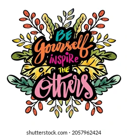

Motivating Others
There are numerous ways a person could motivate another person. They could get involved with other people, ask them questions, have trust in them, inspire, appreciate, reward, challenge, and inform them are great ways to motivate someone. These things show a person is cared for, which can be a motivational technique.
Methods

A person can motivate someone by doing an act of kindness for them that they would never forget. The person could get motivated and feel much better about themself. A person could help another by showing them videos on the internet or by showing motivating music to listen to that could help inspire them. Tell them a motivating story to inspire them to get up and keep trying.
Responding to Others
Some of the ways a person can motivate someone is to tell a motivational comment like you are doing great.
A person could also say,
wow that is cool,
how do you do that.
A person could also try to be an idol to them and help them every step of the way by asking what, when, and why they need the
thing they want. Try to believe that they could achieve the goal because they would be more and willing to attempt to try to achieve the goal.